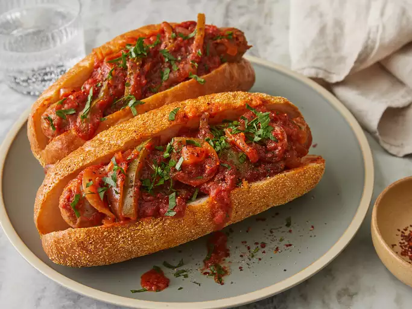

How to prepare a sausage

A sausage is a type of meat product usually made from ground meat—often pork, beef, or poultry—along with salt, spices and other flavourings.
Ingredients
- 8 (4 ounce) links fresh Italian sausage
- 1 (26 ounce) jar spaghetti sauce
- 1 green bell pepper, seeded and sliced into strips
- 1 onion, sliced
- 6 hoagie rolls, split lengthwise (Optional)
- Gather all ingredients
- Place Italian sausage links, spaghetti sauce, green pepper, and onion into a slow cooker; mix until well combined.
- Cover and cook on Low for 6 hours. Serve on hoagie rolls.
Home